简介
生成签名证书的工具有很多，最为常见的就是使用 openssl 库来生成证书，但是操作起来
并不是特别友好，这里我们介绍一个叫 XCA 的软件，可以对各种证书进行图形界面操作。
证书链信息
通常情况下，证书链最上级是 Root CA 证书，下属的是各种用途的 CA 证书，再往下一层，就是
颁发给各公司进行 数字签名 的证书。如果只是自己测试使用，可以直接使用 Root CA 进行签名操作
生成CA证书
XCA软件可以在此链接下载：https://www.hohnstaedt.de/xca/index.php/download
运行该软件后，首先需要创建一个存储所有证书的数据库，选择如下所示
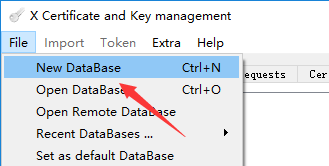
会提示输入存储路径和文件名，然后再输入数据库的 访问密码，点击OK创建完毕。
我们首先创建一个私钥，在 Private Keys 选项卡页面，点击 New Key 按钮
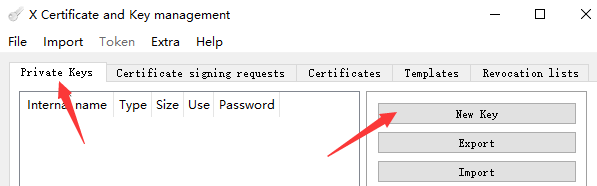
在 Name 栏输入名称，类型 Keytype 默认选择 RSA，长度 Keysize 默认选择2048 bit，
点击 Create 按钮创建私钥
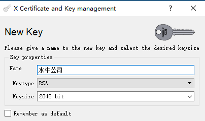
然后准备创建证书，在 Certificates 选项卡窗口，点击 New Certificate 按钮
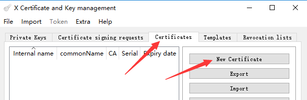
在 Source 选项卡的最下边，选择新证书的模板，这里选择 CA 模板，点击 Apply all 按钮
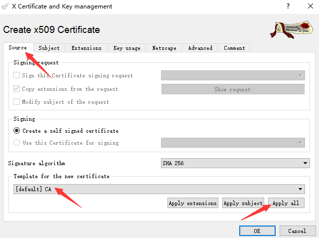
在 Subject 选项卡窗口，输入 Distinguished name 的相关信息， 并在最下边选择私钥
| 缩写 | 字段 | 描述 |
|---|---|---|
| C | countryName | 国家名称，中国就是CN，非必填项 |
| S | stateOrProvinceName | 洲或省名称，非必填项 |
| L | localityName | 地区名称，非必填项 |
| O | organizationName | 组织名称，非必填项 |
| CN | commonName | 公用名，授权的目标，必填项 |
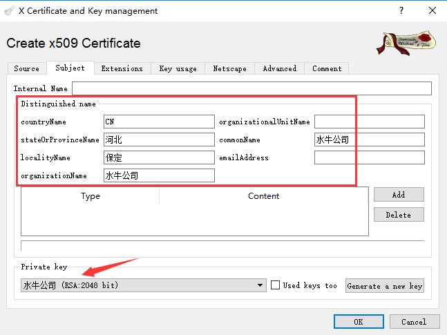
在 Extensions 选项卡窗口，可以查看扩展信息，在选择模板并应用后，这里会自动完成设置，
如果与下图不一致，则说明模板未操作成功，另外可以在 Time range 修改授权的有效期限
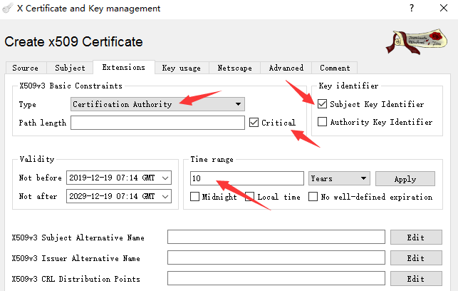
在 Key usage 选项卡窗口，可以查看该证书的授权范围，左边一栏在选择 CA 模板后默认为
Certificate Sign CRL Sign 两项，勾选上左边的 Critical 标识，点击OK按钮完成创建
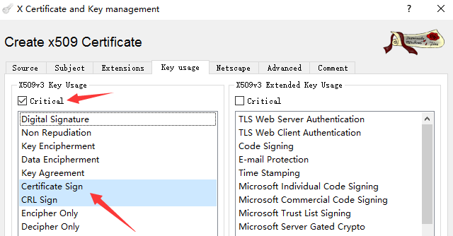
如果想使用该证书进行 数字签名，可以在左边选上第1行的 Digital Signature 授权，同时
右边选上第3行的 Code Signing 授权，右边的 Critical 标识也要勾选上
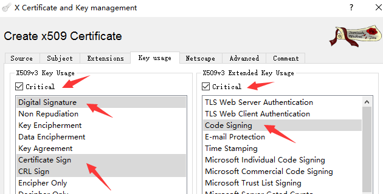
生成SSL证书
首选需要创建一个私钥，然后创建证书时，选择 HTTPS_server 模板，使用 Root CA 进行签名
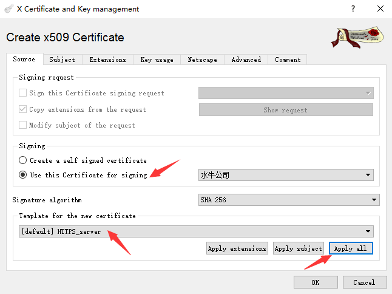
在 Subject 选项卡窗口，选择新建的私钥，并在 commonName 处填写授权的 网址域名
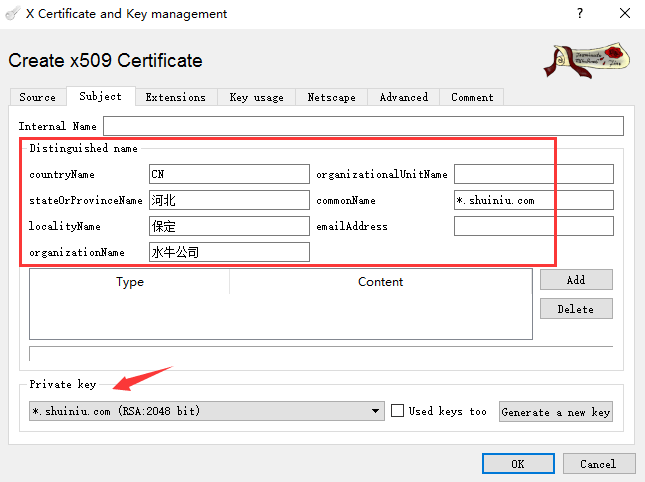
在 Extensions 选项卡窗口，注意在 Subject Alternative Name 处，修改为授权的域名，
多个域名使用逗号隔开，例如：DNS:*.shuiniu.com, DNS:*.shuiniu.cn
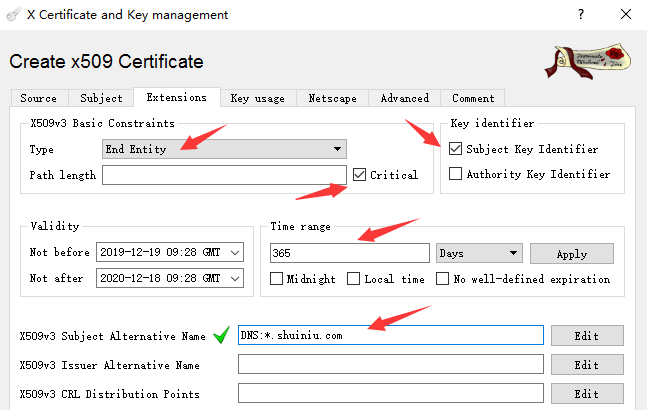
在 Key usage 选项卡窗口，按照如下所示进行选择，点击OK按钮完成创建
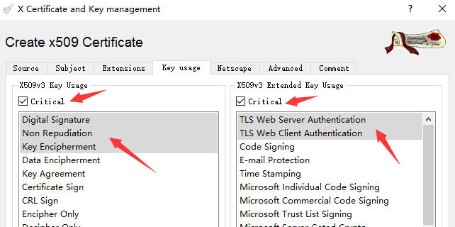
添加授权条目
另外还可以添加自定义的授权条目，比如 Windows应用商店(1.3.6.1.4.1.311.76.3.1) 授权条目，
在软件的安装目录下，可以找到 oids.txt 和 eku.txt 两个文件，复制到 settings 子文件夹下，
在 oids.txt 最后一行增加 1.3.6.1.4.1.311.76.3.1: windows-store: Windows Store Signer
内容，在 eku.txt 最后一行增加 windows-store 内容，重新打开软件后，就可以选择该授权条目
证书的导出
在 Certificates 选项卡界面，选择想要导出的证书，点击 Export 按钮
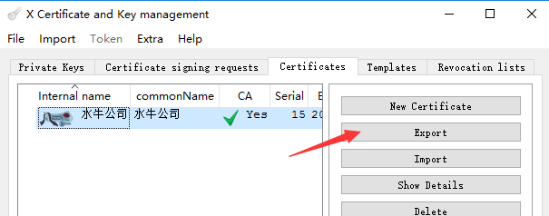
输入导出文件的路径，选择 .p12 格式，可以把证书和私钥一起导出，点击OK按钮后，
会提示输入该证书的访问密码，再次点击OK之后导出完成。
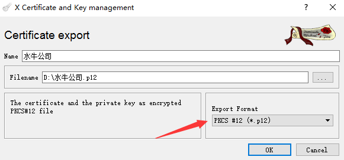
证书 .p12 格式与 .pfx 格式一样，通常情况下可以直接修改扩展名使用。